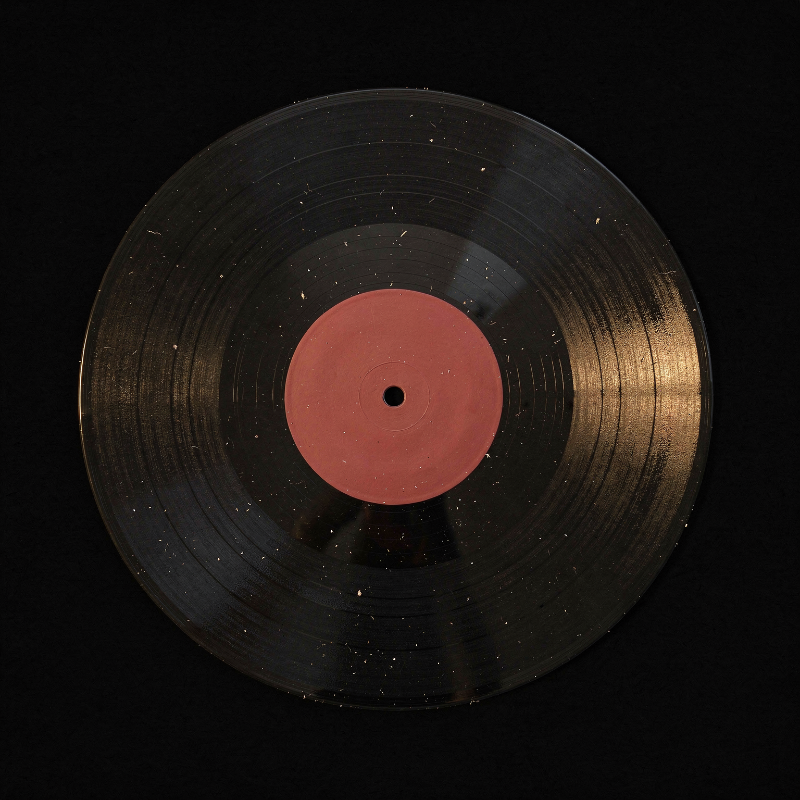
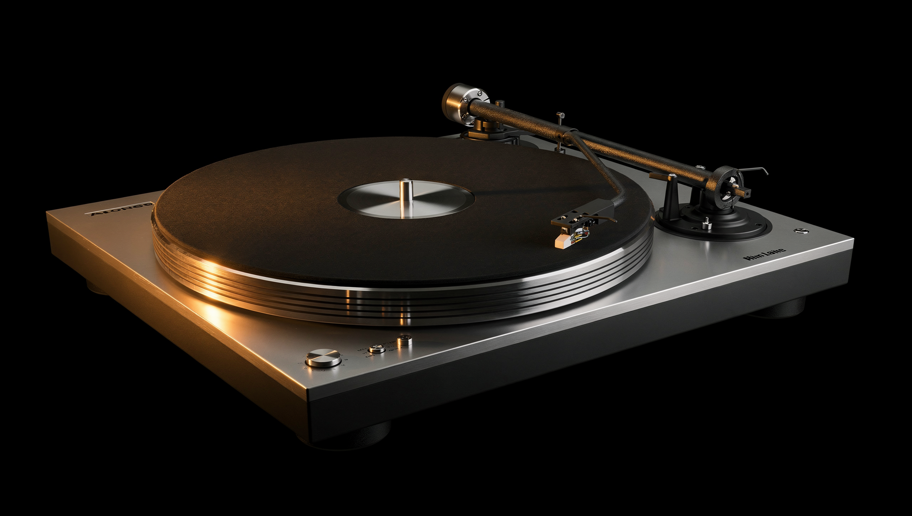

Production review · 1920 × 1080 master · 24 fps timeline. Generated clips retain their native frame rate until conform. These are source takes, not finished hotel films.
CL-2#1
completed

{"width": 1536, "height": 1536, "mode": "RGB"}
REVIEW / top-down vinyl reference produced; slightly oval disc, textured black ground and label colour need comp correction. Actual resolution 1536 square despite requested 2K.
GM-2#1
completed
Contact sheet{"width": 1920, "height": 1080, "codec_name": "h264", "avg_frame_rate": "24/1", "nb_frames": "121", "duration": "5.041667", "has_audio": false}
HOLD / sampled frames: giraffes travel sideways and overlap; no clear back-facing approach to the house. Not approved for Shot 6.
GM-2#2
completed
Contact sheet{"width": 1920, "height": 1080, "codec_name": "h264", "avg_frame_rate": "24/1", "nb_frames": "121", "duration": "5.041667", "has_audio": false}
HOLD / sampled frames at 0.5-second intervals: animals remain largely side-on and move left along the foreground. Required turn/retreat is not established. Do not use as a phase-B start without review.
FA-1#1
completed
Contact sheet{"width": 1920, "height": 1080, "codec_name": "h264", "avg_frame_rate": "24/1", "nb_frames": "121", "duration": "5.041667", "has_audio": false}
REVIEW / sampled frames: couple and gold tortoise walk; painting detail softens and changes from the source. Needs continuous gait/hand/leash QC and separate subject retiming. No take selected.
FA-1#2
completed
Contact sheet{"width": 1920, "height": 1080, "codec_name": "h264", "avg_frame_rate": "24/1", "nb_frames": "121", "duration": "5.041667", "has_audio": false}
REVIEW / sampled frames: couple and gold tortoise walk; pose and painterly detail vary. Needs continuous gait/hand/leash QC and separate subject retiming. No take selected.
CL-1#1
completed

{"width": 1920, "height": 1088, "mode": "RGB"}
REJECT as final prop: invented branding/lettering, complete deck body instead of isolated platter, and duplicated arm-like hardware. Lighting reference only.